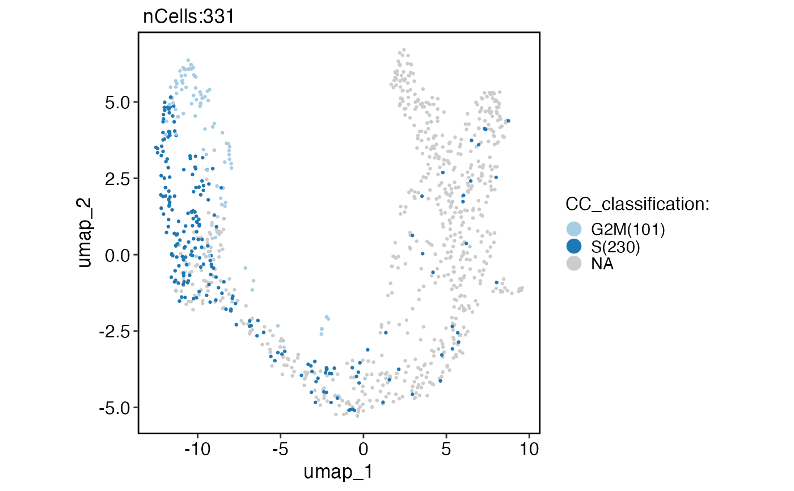
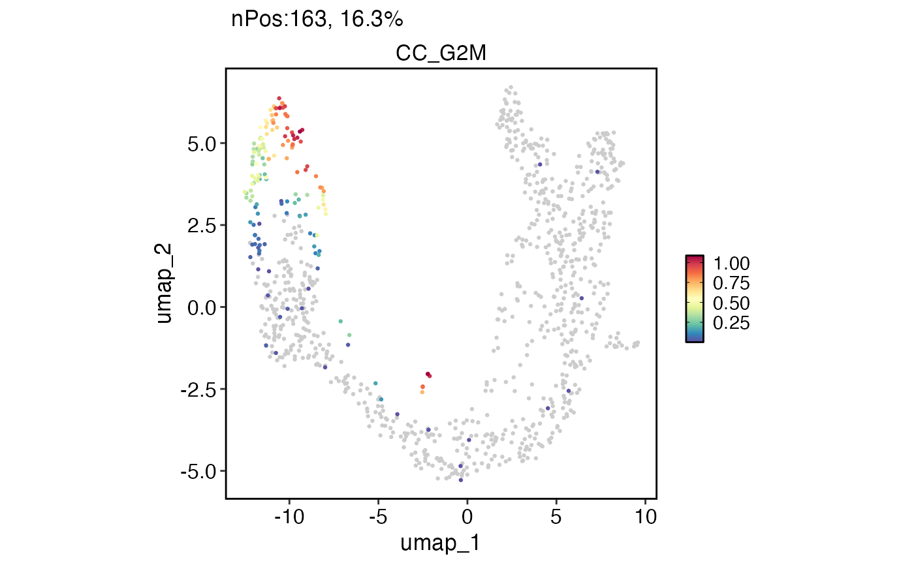

This function performs cell scoring on a Seurat object. It calculates scores for a given set of features and adds the scores as metadata to the Seurat object.
CellScoring(
srt,
features = NULL,
slot = "data",
assay = NULL,
split.by = NULL,
IDtype = "symbol",
species = "Homo_sapiens",
db = "GO_BP",
termnames = NULL,
db_update = FALSE,
db_version = "latest",
convert_species = TRUE,
Ensembl_version = 103,
mirror = NULL,
minGSSize = 10,
maxGSSize = 500,
method = "Seurat",
classification = TRUE,
name = "",
new_assay = FALSE,
BPPARAM = BiocParallel::bpparam(),
seed = 11,
...
)A Seurat object
A named list of feature lists for scoring. If NULLL, db will be used to create features sets.
The slot of the Seurat object to use for scoring. Defaults to "data".
The assay of the Seurat object to use for scoring. Defaults to NULL, in which case the default assay of the object is used.
A cell metadata variable used for splitting the Seurat object into subsets and performing scoring on each subset. Defaults to NULL.
A character vector specifying the type of gene IDs in the srt object or geneID argument. This argument is used to convert the gene IDs to a different type if IDtype is different from result_IDtype.
A character vector specifying the species for which the analysis is performed.
A character vector specifying the name of the database to be used for enrichment analysis.
A vector of term names to be used from the database. Defaults to NULL, in which case all features from the database are used.
A logical value indicating whether the gene annotation databases should be forcefully updated. If set to FALSE, the function will attempt to load the cached databases instead. Default is FALSE.
A character vector specifying the version of the database to be used. This argument is ignored if db_update is TRUE. Default is "latest".
A logical value indicating whether to use a species-converted database when the annotation is missing for the specified species. The default value is TRUE.
Ensembl database version. If NULL, use the current release version.
Specify an Ensembl mirror to connect to. The valid options here are 'www', 'uswest', 'useast', 'asia'.
A numeric value specifying the minimum size of a gene set to be considered in the enrichment analysis.
A numeric value specifying the maximum size of a gene set to be considered in the enrichment analysis.
The method to use for scoring. Can be "Seurat", "AUCell", or "UCell". Defaults to "Seurat".
Whether to perform classification based on the scores. Defaults to TRUE.
The name of the assay to store the scores in. Only used if new_assay is TRUE. Defaults to an empty string.
Whether to create a new assay for storing the scores. Defaults to FALSE.
The BiocParallel parameter object. Defaults to BiocParallel::bpparam().
The random seed for reproducibility. Defaults to 11.
Additional arguments to be passed to the scoring methods.
data("pancreas_sub")
ccgenes <- CC_GenePrefetch("Mus_musculus")
#> Using cached conversion results for Mus_musculus
pancreas_sub <- CellScoring(
srt = pancreas_sub,
features = list(S = ccgenes$S, G2M = ccgenes$G2M),
method = "Seurat", name = "CC"
)
#> Data is raw counts. Perform NormalizeData(LogNormalize) on the data ...
#> Number of feature lists to be scored: 2
#> [2024-11-18 15:13:40.425558] Start CellScoring
#> Workers: 10
#>
|
| | 0%
|
|======================================================= | 50%
|
|==============================================================================================================| 100%
#>
#> [2024-11-18 15:13:40.726386] CellScoring done
#> Elapsed time:0.3 secs
CellDimPlot(pancreas_sub, "CC_classification")
#> Warning: No shared levels found between `names(values)` of the manual scale and the data's fill values.

FeatureDimPlot(pancreas_sub, "CC_G2M")

if (FALSE) {
data("panc8_sub")
panc8_sub <- Integration_scop(panc8_sub,
batch = "tech", integration_method = "Seurat"
)
CellDimPlot(panc8_sub, group.by = c("tech", "celltype"))
panc8_sub <- CellScoring(
srt = panc8_sub, slot = "data", assay = "RNA",
db = "GO_BP", species = "Homo_sapiens",
minGSSize = 10, maxGSSize = 100,
method = "Seurat", name = "GO", new_assay = TRUE
)
panc8_sub <- Integration_scop(panc8_sub,
assay = "GO",
batch = "tech", integration_method = "Seurat"
)
CellDimPlot(panc8_sub, group.by = c("tech", "celltype"))
pancreas_sub <- CellScoring(
srt = pancreas_sub, slot = "data", assay = "RNA",
db = "GO_BP", species = "Mus_musculus",
termnames = panc8_sub[["GO"]]@meta.features[, "termnames"],
method = "Seurat", name = "GO", new_assay = TRUE
)
pancreas_sub <- Standard_scop(pancreas_sub, assay = "GO")
CellDimPlot(pancreas_sub, "SubCellType")
pancreas_sub[["tech"]] <- "Mouse"
panc_merge <- Integration_scop(
srtList = list(panc8_sub, pancreas_sub),
assay = "GO",
batch = "tech", integration_method = "Seurat"
)
CellDimPlot(panc_merge, group.by = c("tech", "celltype", "SubCellType", "Phase"))
genenames <- make.unique(capitalize(rownames(panc8_sub[["RNA"]]), force_tolower = TRUE))
panc8_sub <- RenameFeatures(panc8_sub, newnames = genenames, assay = "RNA")
head(rownames(panc8_sub))
panc_merge <- Integration_scop(
srtList = list(panc8_sub, pancreas_sub),
assay = "RNA",
batch = "tech", integration_method = "Seurat"
)
CellDimPlot(panc_merge, group.by = c("tech", "celltype", "SubCellType", "Phase"))
}